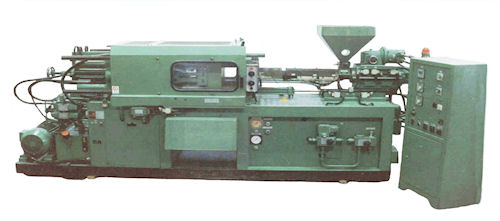
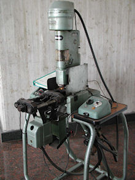

L'Era della Plastica

Le materie plastiche sono i
primi materiali costruiti interamente dall’uomo e non trovati in natura. Hanno dimostrato di poter sostituire con efficacia, e spesso con vantaggio, quasi tutti i materiali tradizionali. Si possono programmare con caratteristiche e proprietà "su misura" a seconda degli impieghi: sono materiali moderni la cui graduale scoperta permette tutte le esperienze formali e tutte le libertà di progettazione.
Sono prodotti svincolati dalla geografia, nel senso che non sono legati, come il cotto, il marmo o il legno, alla disponibilità di coltivazioni o di giacimenti. La loro scoperta ha coinciso con il momento di maggiore slancio produttivistico e di maggiore crescita economica della storia dell’umanità, offrendo vantaggi tecnici ed economici ben noti.

Per questi ed altri motivi le materie plastiche sono penetrate così profondamente nella fantasia dell’uomo tanto da diventare la materia prima più utilizzata della civiltà industriale. Se dovessimo definire il 1900, sarebbe fin troppo ovvio e banale chiamarlo "l’epoca delle materie plastiche". Il lavoro sperimentale dei ricercatori, unito ad una più profonda conoscenza delle sostanze elementari e dei composti, portò alla scoperta di nuovi prodotti. Così in sostituzione, o a fianco delle resine naturali (come colofonia, gommalacca, coppale, gomma naturale, ambra, guttaperca, ebanite), apparvero le resine artificiali o sintetiche ottenute mediante reazione chimica da sostanze non resinose.
Le Prime Invenzioni: Dalla Parkesine alla Celluloide
La nascita della moderna industria delle materie plastiche risale al 1862, anno in cui l’inglese Alessandro Parkes espose alla Grande Esposizione di Londra alcuni minuscoli oggetti fabbricati con la Parkesine, un composto a base di nitrato di cellulosa lavorato a pressione.
Pochi anni dopo, nel 1868, un giovane tipografo americano di nome John Wesley Hyatt, mentre era alla ricerca di un materiale capace di sostituire l’avorio nella fabbricazione delle palle da biliardo, mescolò a caldo nitrato di cellulosa (estratto dal cotone, dal legno o da altri vegetali) e canfora, ottenendo la celluloide. Hyatt e Parkes si disputarono a lungo la priorità dell’invenzione.
Nota storica: La storia della celluloide si potrebbe far incominciare già nel 1845, anno in cui Schönbein ottenne il nitrato di cellulosa. Ma la prima vera fabbrica industriale rimane comunque quella della Hyatts Celluloid Manufacturing Company, ad Albany negli Stati Uniti. Vi si produceva la Celluloide, che può a buon diritto essere ritenuta la prima vera materia plastica prodotta industrialmente.
Il Novecento e l'Avvento della Bakelite
Dal 1868 fino al 1920 l’industria delle materie plastiche rimase un'attività di importanza piuttosto marginale. La vera svolta arrivò nel 1909, quando il chimico belga Leo Baekeland concluse una ricerca su prodotti resinosi ottenuti per condensazione del fenolo con la formaldeide.
La resina così ottenuta aveva una peculiare caratteristica: inizialmente fusibile e solubile diventava in seguito, sotto l’azione del calore e di un catalizzatore, una massa dura, infusibile e insolubile. Questa resina sintetica fu chiamata dallo sperimentatore "Bakelite".
Cronologia delle Materie Plastiche
- 1830: Reichenbach distilla il petrolio greggio
- 1839: Goodyear vulcanizza la gomma
- 1844: F. Walton produce il linoleum
- 1845: Schönbein ottiene il nitrato di cellulosa, punto di partenza per arrivare alla celluloide
- 1847: J. J. Berzelius ottiene il primo poliestere
- 1862: Parkes presenta alla grande esposizione di Londra i primi manufatti di Parkesine
- 1868: Partendo dal nitrato di cellulosa e dalla canfora Hyatt ottiene la celluloide
- 1872: I fratelli Hyatt brevettano la prima macchina a iniezione per materiali plastici
- 1878: Hyatt fabbrica il primo stampo a iniezione a più impronte
- 1879: Viene brevettato da Gray il primo estrusore a vite
- 1880: Kahlbaum polimerizza il metacrilato
- 1894: Produzione industriale dell’acetato di cellulosa
- 1899: Nasce la Galalite
- 1901: Prime resine alchidiche
- 1909: Baekeland annuncia la scoperta delle resine fenoliche, brevettate con il nome di Bakelite
- 1910: Viene costituita la General Bakelite Co.
- 1912: Nasce l’acetato di cellulosa-pellicole fotografiche
- 1915: Nasce a Leverkusen il primo elastomero sintetico
- 1918: In una raffineria del New Jersey si ottiene l’alcool isopropilico dal propilene
- 1918: Nasce la caseina-formaldeide (galalite) lastre – barre
- 1919: Nascono i polimeri aceto-vinilici -adesivi
- 1922: Staudinger incomincia a studiare la struttura delle macromolecole
- 1924: Urea-formaldeide resine fuse
- 1926: In Germania si producono industrialmente le prime macchine a iniezione progettate per materiali polimerici
- 1928: Produzione commerciale delle polveri da stampaggio ureaformaldeide
- 1930: Sviluppo industriale dello stirene e del polistirene in Germania
- 1931: Inizia la produzione industriale del PVC in Germania
- 1933: Resine poliestere insature
- 1934: Inizia la produzione del polimetilmetacrilato
- 1935: Carothers scopre le poliammidi
- 1935: Prima macchina per la soffiatura di corpi cavi di materia plastica
- 1935: Resine melamina-formaldeide
- 1936: Produzione dell’ABS
- 1936: Scoperta del polietilene a bassa densità in Gran Bretagna
- 1939: Depositato in Germania il brevetto sulle resine epossidiche
- 1939: Le I.C.I. Producono il polietilene b.d.
- 1940: Inizia la produzione dei poliuretani
- 1941: Produzione industriale delle resine poliammidiche
- 1941: Prime resine siliconiche
- 1946: Produzione industriale delle resine epossidiche
- 1950: Produzione industriale del politetrafluoroetilene
- 1954: Natta ottiene il polipropilene isotattico
- 1957: Produzione di policarbonati
- 1959: Resine acetaliche
- 1962: Produzione delle poliimmidi
- 1963: Elastomeri termoplastici
- 1964: Si ottiene il polifenilenossido
- 1965: Produzione dei polisolfoni
- 1967: Poliesteri termoplastici
- 1974: Resine arammidiche (poliammidi aromatiche)
- 1978: Poliarilati
- 1979: Si costituisce la “CGF di Pranzetti“